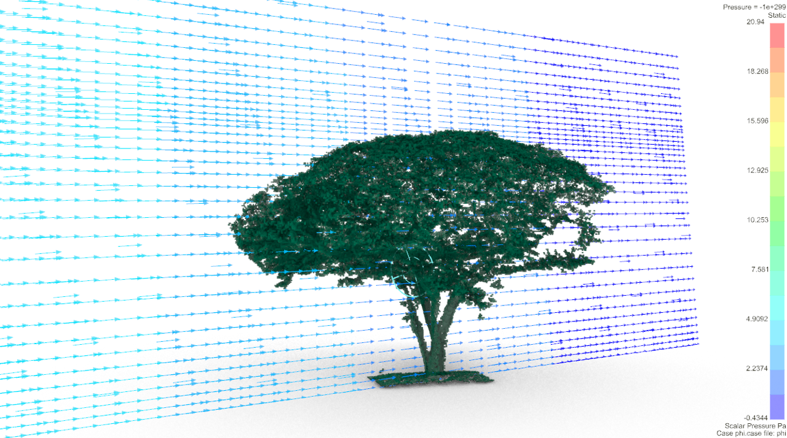
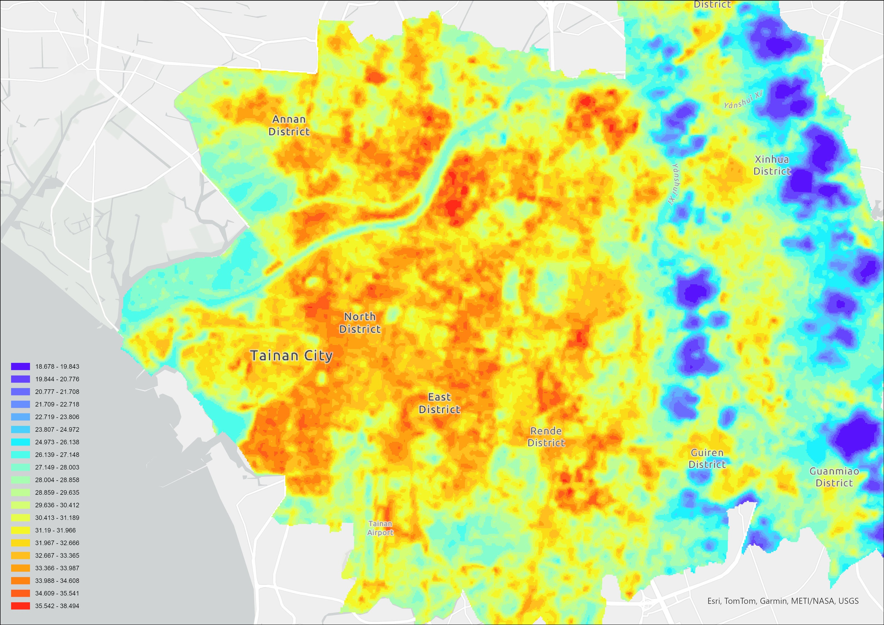
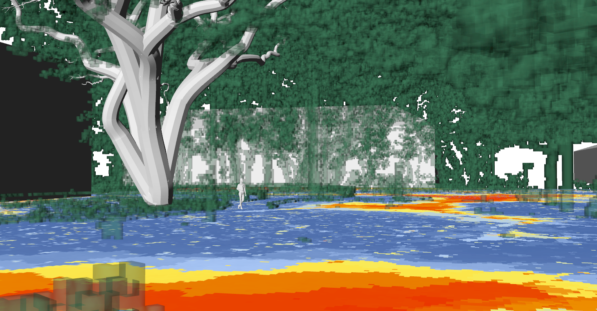

← Index
Research
Intro
Graduated from the Building and Climate Lab (BCLab), Graduate Department of Architecture, National Cheng Kung University. My research spans urban environmental analysis, LiDAR point cloud processing, spatial modeling, and thermal environment simulation. I am committed to integrating interdisciplinary approaches across architecture, spatial information, and environmental science to investigate the effects of urban trees on microclimate and human thermal comfort.




Publications
2026.03
Airborne LiDAR-derived Laser Penetration Index as an Urban-Scale Proxy to Evaluate Thermal Comfort Under Urban Tree Cluster Shading — Journal article under review
2026.01
12th Conference on Urban Planning and Spatial Information — Lee, S.-Y., Wang, C.-K., Lee, C.-C., & Lin, T.-P. (2026). Simulating urban tree thermal comfort under varying canopy coverage using terrestrial LiDAR-derived 3D models. In Proceedings of the Third International Conference on Future Challenges in Sustainable Urban Planning & Territorial Management (SUPTM 2026). Universidad Politécnica de Cartagena. hdl.handle.net/10317/23809
Projects
{{ p.date }}
{{ p.title }}
{{ p.role }}
Sunny Lee — Architecture Portfolio© 2026